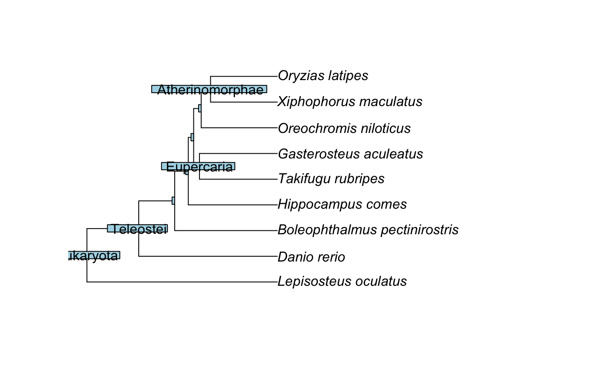

Add Open Tree of Life Taxonomy to tree nodes.
Examples
if (FALSE) # This is a flag for package development. You are welcome to run the example.
# Load the Open Tree chronograms database cached in datelife:
utils::data(opentree_chronograms)
# Get the small chronograms (i.e., chronograms with less that ten tips) to generate a pretty plot:
small <- opentree_chronograms$trees[unlist(sapply(opentree_chronograms$trees, ape::Ntip)) < 10]
# Now, map the Open Tree taxonomy to the nodes of the first tree
phy <- map_nodes_ott(tree = small[[1]])
# and plot it:
# plot_phylo_all(phy)
library(ape)
plot(phy)
nodelabels(phy$node.label)

#end dontrun